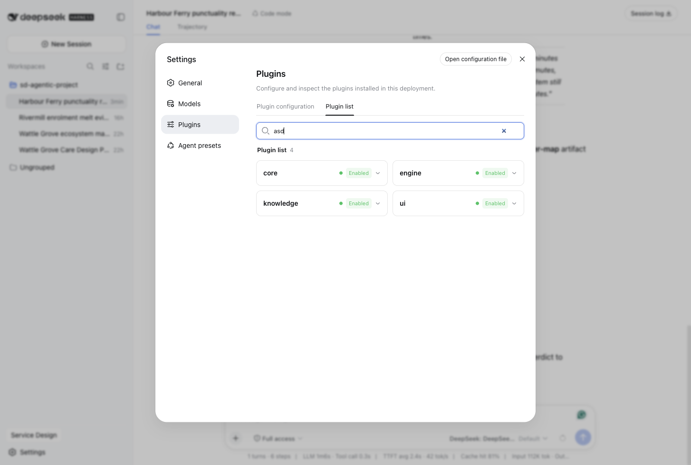
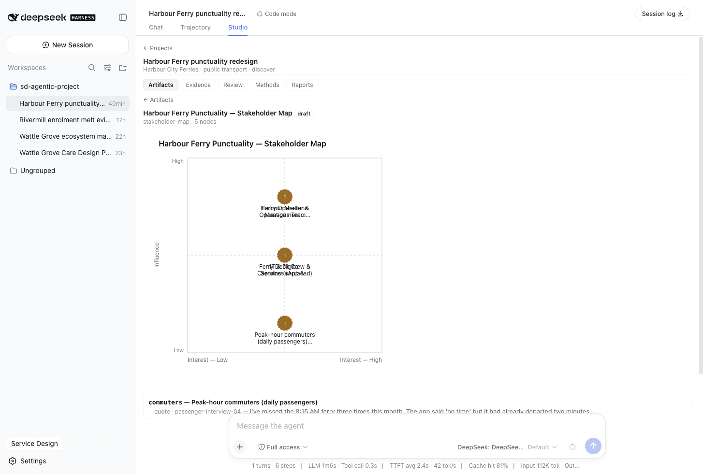
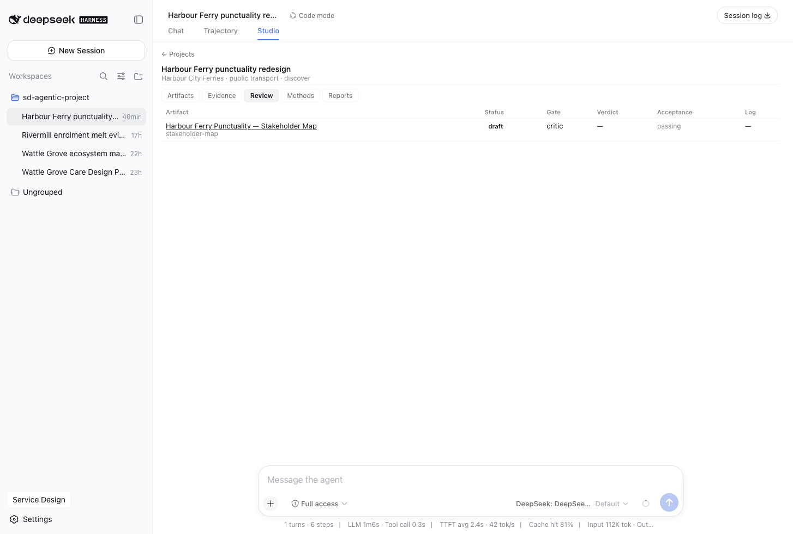
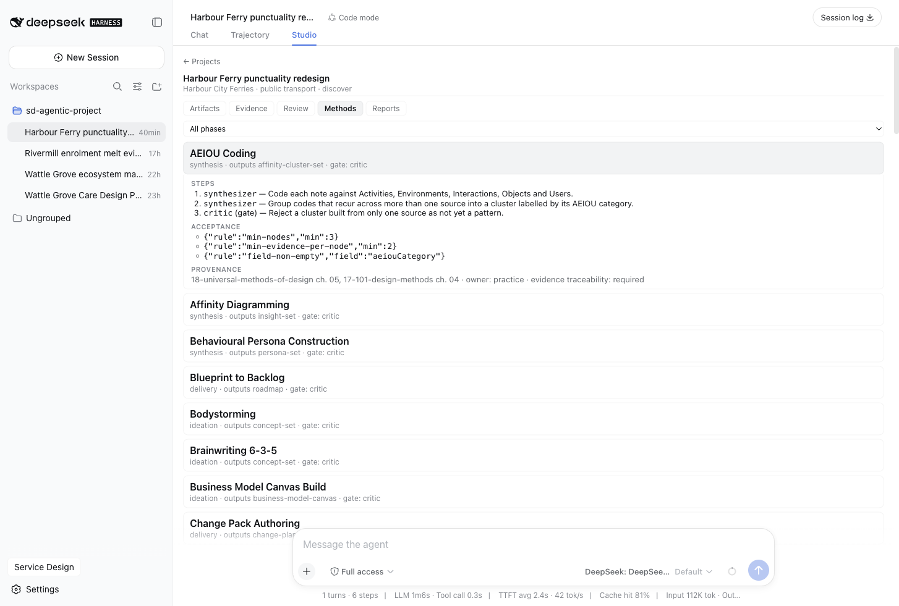
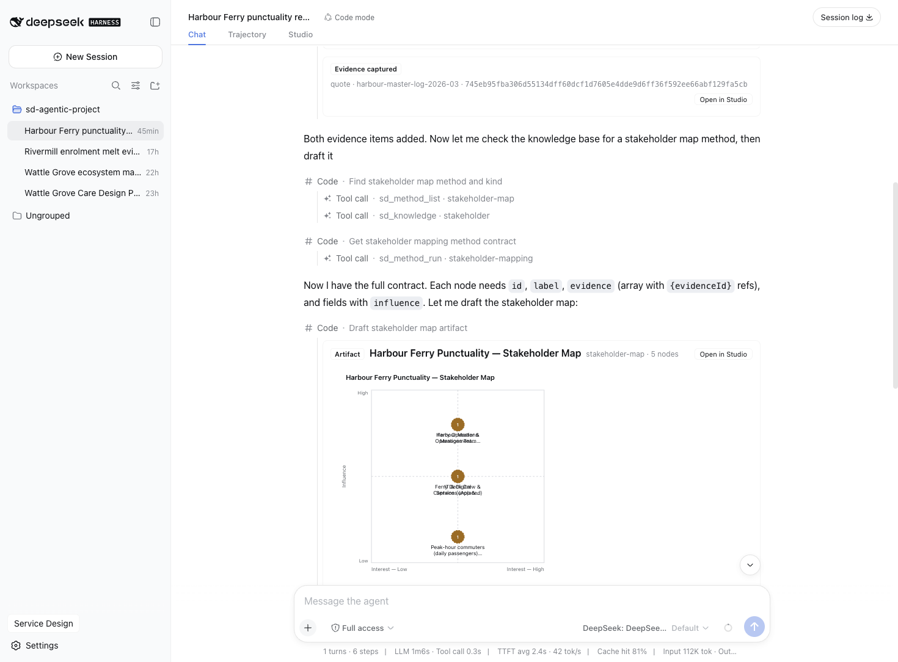
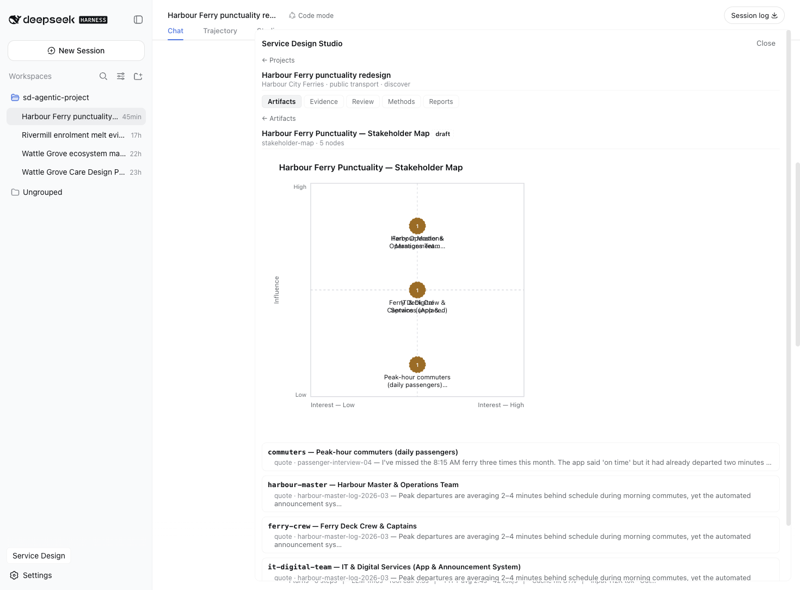

The DeepSeek Harness workbench
The Agentic Service Designer suite runs inside DeepSeek Harness — the plugin-based agent runtime where everything is a plugin — as four composed packages. The result is a workbench: a chat surface where the model drives the fifteen sd_* engine tools, a Studio tab that browses the same project store the tools write, and conversation rendering that turns tool calls into deep-linked cards. This page documents the surface as it ships today, verified against suite/packages/ui/src/ and captured from the live harness.
The four suite packages
| Package | Role |
|---|---|
@asd/core | Project, evidence, and artifact stores plus the acceptance engine — plain files under the workspace, ~/.asd/projects by default |
@asd/engine | The 15 model-facing sd_* tools mounted in the web profile |
@asd/knowledge | The 74 method manifests and 32 machine-checked artifact-kind schemas, shipped as JSON data |
@asd/ui | Host RPC plus the browser client: the Studio workbench, the sidebar entry, and the inline tool cards |
A fifth package, @asd/runtime, is the same engine behind the CLI and the MCP server. It is not composed into the web profile — the reason is its one extra tool, covered below.
Composition: zero edits to the host
The suite mounts through the harness's profile mechanism. The web profile is a directory, ~/.dsh/profiles/web, whose package.json declares link dependencies on the four suite packages and lists them in its bundle manifest — quoted verbatim:
"dsh": {
"profile": {
"bundles": [
"@deepseek-ai/dsh-base",
"@deepseek-ai/dsh-web-app",
"dsh-vision-router",
"@asd/core",
"@asd/engine",
"@asd/knowledge",
"@asd/ui",
"@deepseek-ai/dsh-book-writer"
]
}
}The four @asd/* entries sit alongside the harness's own base and web-app bundles, the vision router, and the book-writer bundle. Nothing in the harness checkout is modified: the suite is a profile citizen, installed and removed by editing this one list. From a DeepSeek Harness checkout, boot the surface with:
pnpm dsh web --port 4173The proof that composition worked is in Settings → Plugins: the four suite plugins register individually, all Enabled, among the 166 plugins mounted in this deployment.

The Studio tab and its entry points
The workbench has two entry points onto one body. The center column's tab bar gains a Studio tab beside Chat and Trajectory — registered into the harness's conversation.view slot — and the sidebar's "Service Design" button opens the same workbench as an overlay floating over the current conversation. Both mount the identical StudioBody; a shared store (workbench-store.ts) holds {open, target: {projectId?, artifactId?}} so the two surfaces and every tool card in chat stay in sync. Two precise behaviors: the sidebar button toggles the overlay, not the tab — switching conversation.view programmatically would require a view-switch API the harness does not expose cross-package — and for the same reason every "Open in Studio" click-through deep-links into the overlay, landing on the project (and artifact) it came from rather than the dashboard.

The projects dashboard
The dashboard is one RPC call: getProjectsSummary fans out host-side, returning every project with its counts — {project, artifactCount, evidenceCount, draftCount, vetoCount} — so the browser renders the whole grid without per-project round trips. Each card shows the phase badge, N draft / N veto badges when those counts are nonzero, the project name, its client · sector · phase line, and the artifact and evidence totals. The badges are the governance state at a glance: a project carrying vetoed artifacts shows it before you open anything.
One project, five tabs
Clicking a card opens the project detail: name, metadata, and five tabs over the same store the tools write.
Artifacts is a gallery grid — one card per artifact with its status badge (draft, final, or veto), kind, title, and node count. A card opens the full render view: the artifact drawn as sanitized inline SVG, and beneath it the node↔evidence cross-reference — every node listed with its evidence refs resolved against the register (fetched once via listEvidence), each ref shown as kind · source — body. An unresolved ref renders as unresolved: <id> rather than being silently dropped; with the engine's integrity checks that should never appear, which is exactly why it is shown when it does.

Evidence is the register as a table — kind, source, body, capture date — with a kind filter (all, quote, telemetry, document) and a substring search, both evaluated host-side by the same listEvidence query path sd_evidence_query uses.
Review is the review board: one row per artifact with its status, the review gate its method declares, the latest verdict, the acceptance state, and a log link. The rows come from listReviewRows, which ports the sd_review_list derivation into the host — including re-running acceptance against the live method manifest rather than trusting the check persisted at write time, because a manifest may have tightened since. A status filter is available on the RPC. The Log cell deep-links: clicking "veto log" opens the review-veto-log artifact itself in the Artifacts browser, so the Critic's rows are one click from the verdict they produced.

Methods is the knowledge layer browsable: the 74 method manifests with a phase filter, each row showing phase, output kind, and gate, expanding to the full machine contract — role-assigned steps with gated steps marked, the acceptance rules as JSON, and the provenance (book/article sources, owner, evidence-traceability rule). Below the manifests, an artifact-kinds table lists every registered kind — id, title, node label, sources — from listArtifactKinds.

Reports is the pre-existing generator, unchanged: the six report kinds — engagement, executive-summary, research-findings, artifact-dossier, traceability-matrix, method-log — rendered as a complete HTML document inside an <iframe srcDoc> with an empty sandbox attribute, so isolation is enforced by the browser (opaque origin, no script execution) rather than by trusting the generator.
Tool cards in the conversation
The client registers keyed tool.call.toolview cards for six wire names — sd_artifact_write, sd_artifact_get, sd_artifact_list, sd_review, sd_project_create, sd_evidence_add — so the transcript shows the engagement, not raw JSON. Accepted writes and gets render the artifact inline as sanitized SVG; lists render one deep-linked row per artifact; review cards show the verdict, resulting status, and rows logged; project-create and evidence-add cards confirm with the new ids. Every card carries an Open in Studio button that deep-links the overlay to the project or artifact it came from. The refusal path of sd_artifact_write lists each acceptance failure with its rule and node, and states the engine's real semantics: "Persisted as a draft — blocked from final status and export until remediated."

A conversation.chat.turnTail chain entry closes each turn that produced artifacts with an "Artifacts:" chip strip — one chip per artifact the turn's writes persisted, each deep-linking into Studio. The strip is deliberately conservative: it reads the turn's own sd_artifact_write results, so it fires for root write calls only. In Code Mode sessions, where the sd_* tools run nested inside run_code rather than as root tool calls, it correctly declines and shows nothing.

The host RPC
@asd/ui mounts two routes on the harness web server: the Studio's static assets at /asd/app, and a bounded JSON-RPC channel at POST /asd/rpc. The channel is a closed allowlist of ten read-only methods — no eval, no passthrough, and nothing in it can write:
| Method | Params | Returns |
|---|---|---|
listProjects | — | { projects } |
getProjectsSummary | — | { projects: [{ project, artifactCount, evidenceCount, draftCount, vetoCount }] } |
getProject | projectId | { project, artifacts } |
listArtifacts | projectId, kind? | { artifacts } |
getArtifact | projectId, artifactId | { artifact } |
listEvidence | projectId, search?, kind? | { evidence } |
listMethods | phase?, artifactKind? | { methods } |
listArtifactKinds | — | { kinds } |
listReviewRows | projectId, status? | { rows } |
generateReport | projectId, kind | { html } |
Every method validates its own params; a validation failure resolves to { ok: false, error } at HTTP 400, never a 500. The request body is capped at 64 KB. Both routes refuse to register at all when the web server's host is not 127.0.0.1 — the plugin throws at startup rather than expose project data to the LAN. The workbench is simply this channel's first client; anything else on loopback can read the same store the same way.
Why fifteen tools in chat, sixteen in the CLI
The harness web profile mounts fifteen sd_* tools; the CLI and MCP server expose sixteen. The difference is sd_factcheck, which ships in @asd/runtime and is deliberately not composed into the web profile — in-harness fact-checking therefore happens from the CLI or over MCP, against the same workspace the chat tools wrote, not through the chat tools. Article 36's engagement makes the split concrete: the model produced and reviewed artifacts in chat, and the deterministic replay ran from the asd CLI at the readout, exit code 0 on all-pass.
Using the workbench
Two engagements show the surface end to end; both are documented with real captures.
Wattle Grove Community Care (article 36) is the full arc. A designer described an in-home aged-care provider's continuity problem and pasted field research into the chat. The model — with no instruction naming any tool — discovered the method registry, chose phase-appropriate methods, and produced a stakeholder map, a current-state journey map, and a five-lane evidence-gated service blueprint, every node traced to a quoted line. When asked to add an aspirational stage to the current-state journey, the write was refused by the acceptance gate and persisted only as a draft with its check failures attached; the model explained the refusal and proposed the correct alternative.
Harbour Ferry is the live-run shape, and the project the screenshots on this page show: one prompt — "create a project called 'Harbour Ferry punctuality redesign'…" — and the model created the project via sd_project_create, logged evidence from the harbour master's log via sd_evidence_add, and drafted a five-node stakeholder map with every node evidence-backed, saved as status: draft pending a review verdict. The dashboard shows the new project with its 1 draft badge; the Review tab shows the row waiting on a Critic verdict. The loop — prompt → tool call → acceptance gate → review verdict → fact-check — is unchanged from the other surfaces; the workbench contributes what the terminal cannot: rendered artifacts at the moment they are accepted, and the whole store browsable one click from any card in the transcript.
Where next
- Engine concepts — the evidence register, the draft/final lifecycle, acceptance rules, the review gate, and the fact-check, with real JSON.
- Tutorials — three scripted walkthroughs: the gated-artifact arc in the CLI, an engagement in Claude Code, and the gate in CI.
- Getting started to install a surface; the CLI and the MCP server for the other two.